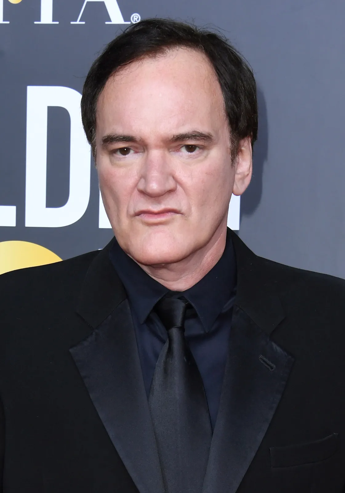
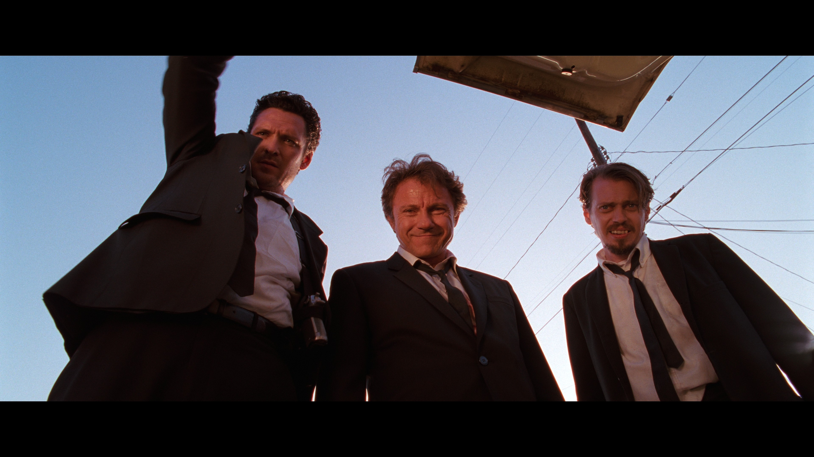
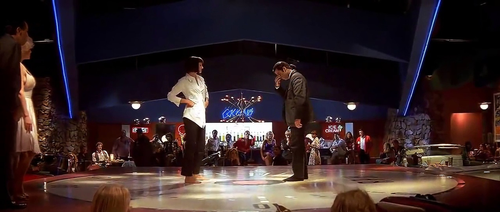
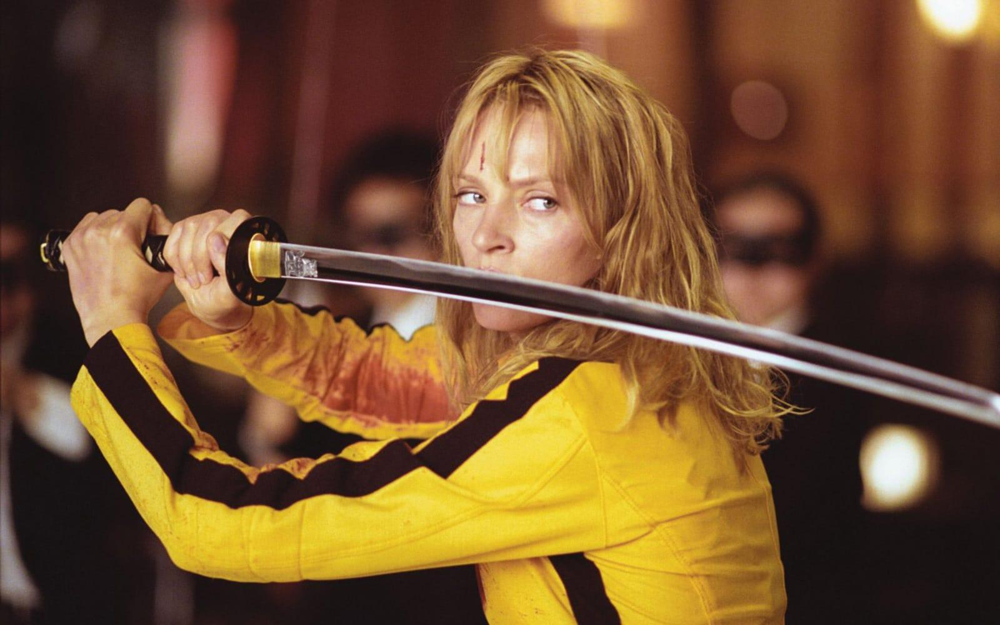
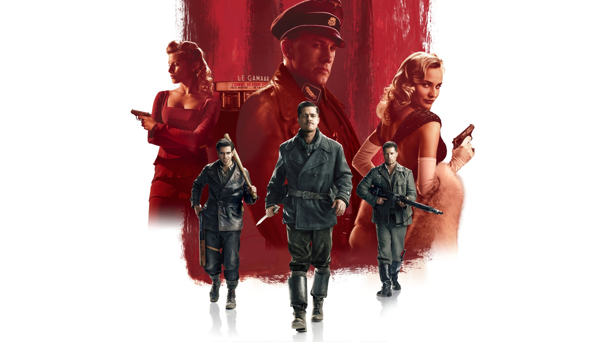
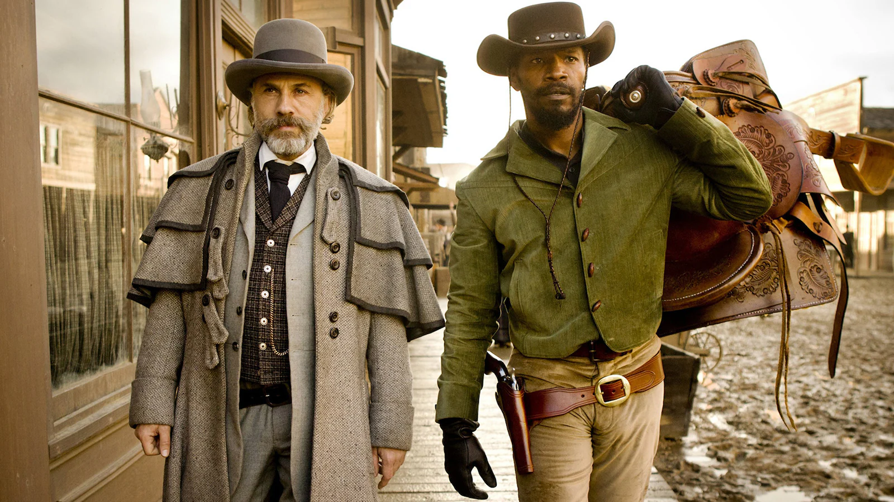
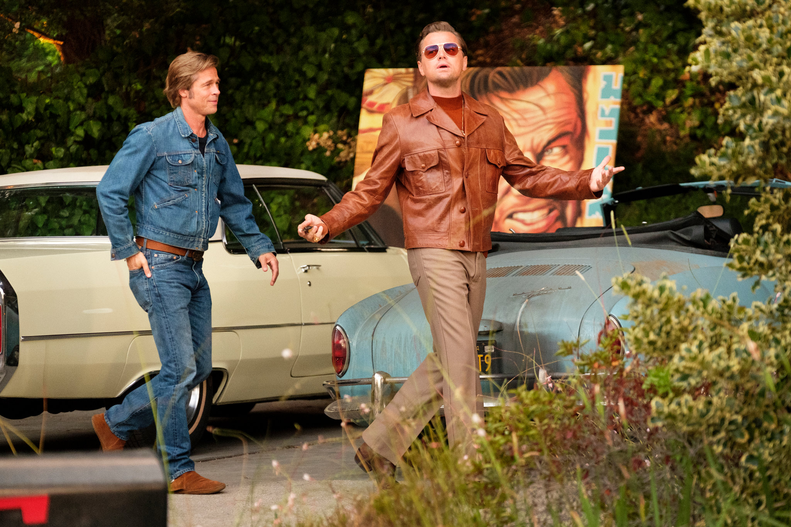

Hollywood — Filmskaper
Quentin Tarantino er en av Hollywoods mest ikoniske og kontroversielle regissører, kjent for sin unike stilmiks av vold, sort humor, popkultur-referanser og ikke-lineære fortellinger.

Tarantinos debutfilm. Et diamantran går galt, og en gruppe anonyme kriminelle forsøker å avdekke hvem blant dem som er politispion — fortalt nesten utelukkende i et lager.
Thriller
En sammenvevd fortelling om gangstere, en bokser og en mystisk koffert i Los Angeles. Vant Gullpalmen i Cannes og revolusjonerte moderne filmspråk.
Action / Komedie
En bruden (Uma Thurman) overlever et massemord på bryllupsdagen og setter i gang en knallhard hevnferd. En hyllest til kung fu-filmer, spaghetti-western og anime. Utgitt i to deler — Vol. 1 (2003) og Vol. 2 (2004).
Hevn
Alternativ krigshistorie der en gruppe jødiske soldater og en fransk-jødisk kinoinnehaver planlegger å ta livet av Nazi-Tysklands ledelse under en filmpremiere i Paris.
Krig
En frigitt slave (Jamie Foxx) samarbeider med en tysk dusørjeger (Christoph Waltz) for å befri sin kone fra en brutal plantasjeeier i det førkrigstids amerikanske sør.
Western
En kjærlighetserklæring til 1969-tidens Hollywood, fortalt gjennom en aldrende TV-stjerne (Leonardo DiCaprio) og hans stuntmann (Brad Pitt) — med Sharon Tate-drapet som dystert bakteppe.
Drama
Quentin Tarantino ble født 27. mars 1963 i Knoxville, Tennessee. Han fikk ingen formell filmutdanning — i stedet lærte han seg håndverket bak disken på Video Archives i Manhattan Beach, California, der han så tusenvis av filmer fra alle sjangre og epoker. Hans debutfilm Reservoir Dogs ble sensasjon på Sundance i 1992 og skapte en helt ny stemme i amerikansk kino.
Tarantino er kjent for sin signaturstil: lange, knivskarpe dialoger der hverdagslige samtaler møter eksistensiell spenning, ikke-lineær struktur som deler historier i kapitler, og en eklektisk bruk av musikk fra helt uventede sjangre. Han setter popkultur og brutal vold side om side — og gjør det til kunst.